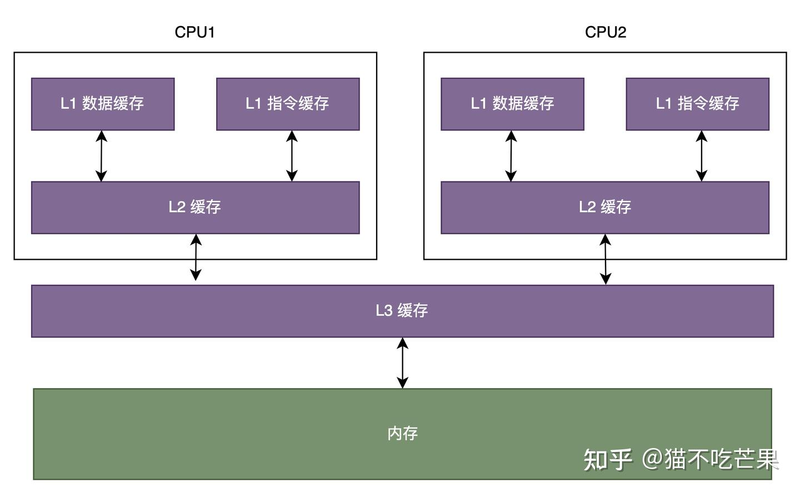
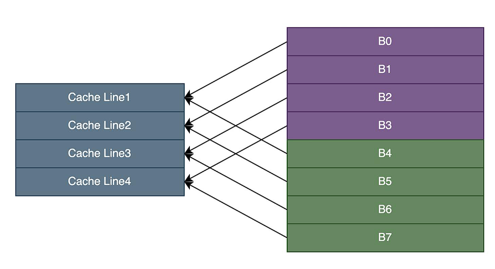
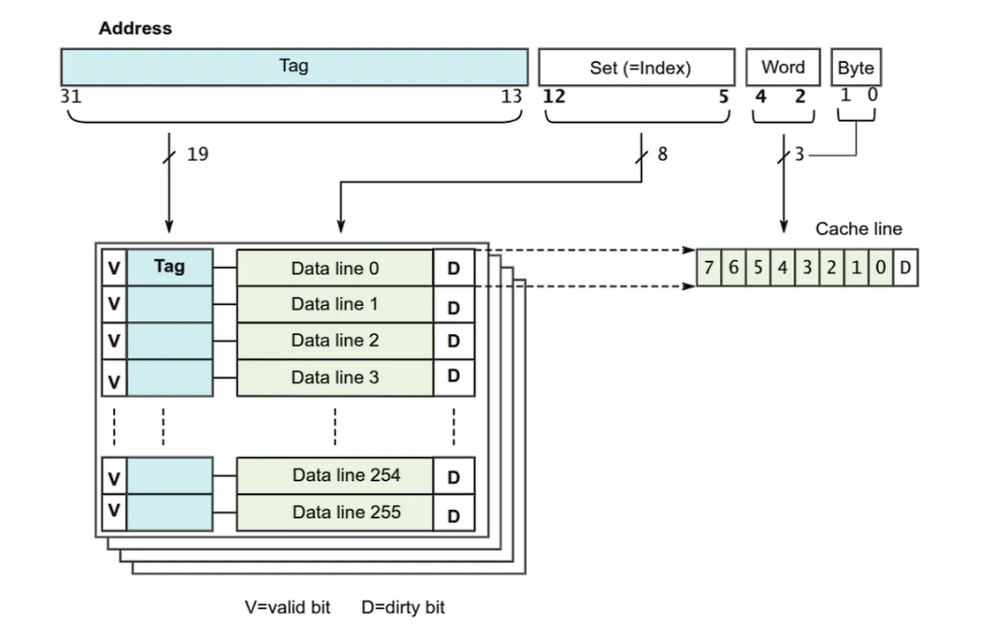
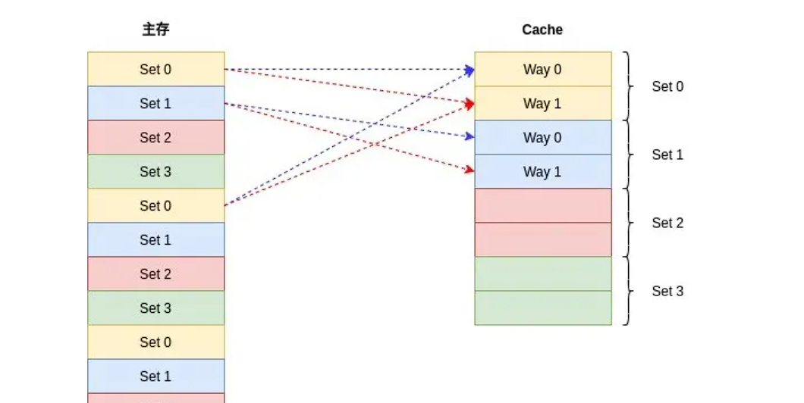
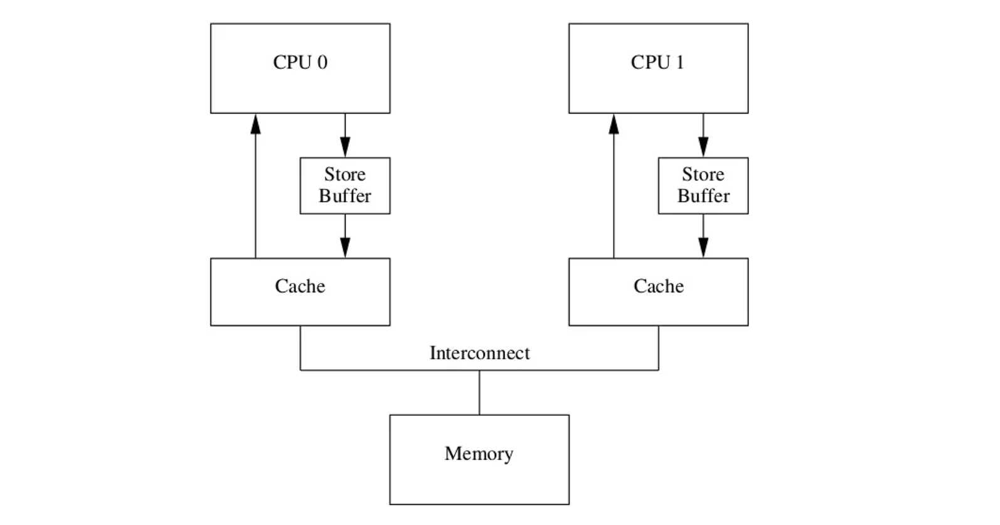

c++内存模型和原子操作
局部性原理
缓存是一个非常常用的工程优化手段，其核心在于提升数据访问的效率。缓存思想基于局部性原理，这个原理包括时间局部性和空间局部性两部分：
- 时间局部性：指程序在访问某个数据时，通常会在不久的将来再次访问该数据。例如，一个循环结构中，程序会反复访问数组中的某个元素，这就是时间局部性的体现；
- 空间局部性：指程序在访问某个数据时，通常会访问该数据所在的一段连续内存。例如，一个数组中相邻的元素通常会被一起访问，这就是空间局部性的体现。
CPU缓存
cpu和内存发展的不平衡，速度相差大，在中间引入缓存，每次cpu读取数据时先从缓存读取
cpu的缓存分为L1（包含L1 I和L1 D，分别存储指令和数据），L2是每个cpu独有的，L3为多个cpu共享
每一个cpu缓存由多个Cache Line缓存行组成，并且主存根据缓存行大小划分为多个主存块，以便对应的主存块直接加载到缓存
缓存行结构为：| 状态位 | 组标记 | 数据块 |
状态位：标记该Cache Line中数据状态，每个缓存数据有已修改、独占、共享、已失效四种状态，即MESI
组标记：为了区分映射到同一个缓存行中不同的内存块，主存与缓存的地址映射关系分为直接映射，组相联映射和全相联映射
数据块：缓存了内存块数据的副本，缓存命中后根据偏移量获取缓存块中对应的字。
CPU映射
直接映射：根据缓存行个数将内存分组，每一个块一一映射，不同组的内存块会映射到同一个缓存行中
组相联：
- cache line：常见的缓存行大小有32字节、64字节和128字节
- way：每一个组有几个cache line，8路组相联指一个组有8个cache line
- set：即多少个组，根据cache size / n way / cache line size计算出多少个组
第一种情况：
在大多数教材中，内存地址被分为以下三个字段：
B = 2^b 代表存储单元偏移量
S = 2^s 代表缓存的组数，用来映射内存到缓存是哪一个组
tag则是缓存的标识，在这个组中比较每一个cache line，如果与某个line一致，并且valid有效，则缓存命中；因此cache miss就有以下几种情况：
- 内存数据没有被放到cache
- 老数据被新数据替换，导致访问老数据miss
- 数据被放到多个cpu的缓存中，其中一个cpu对其修改导致其他cpu的cache line失效
第二种情况：
像ARM Cortex-A系列，内存地址被分为四个字段;
Tag：同样表示一个cache line对应一个内存块的索引
Set：同样表示内存在哪个组中
区别：offset被细分为Word和Byte字段，这是由于存储单元的基本单位不同；上面以字节为单位，这里以字为单位，一个字刚好是数据总线的大小：4字节==32位；Word字段用来表示属于哪个字，而Byte字段表示属于哪个字节
图中显示的是4路组相映，每个cache line包含8个字，即32个字节；因此一个组大小位128字节，cache总大小位128*256=32K
内存到cache的映射如下：
缓存一致性
写直达：CPU每次访问修改数据时，无论数据在不在缓存中，都将修改后的数据写入缓存和内存，缓存数据与内存数据保持强一致性，但是每次修改都需要更新两边，这种做法影响写操作的性能。
写回：为了避免每次写操作都要进行数据同步带来的性能损失，写回策略里发生读写操作时：
- 如果缓存行中命中了数据，写操作对缓存行中数据进行更新，并标记该缓存行为已修改。
- 如果缓存中未命中数据，且数据所对应的缓存行中存放了其他数据：
- 若该缓存行被标记为已修改，读写操作都会将缓存行中现存的数据写回内存中，再将当前要获取的数据从内存读到缓存行，写操作对数据进行更新后标记该缓存行为已修改；
- 若该缓存行未被标记为已修改，读写操作就直接将当前要获取的数据从内存读到缓存行。写操作对数据进行更新后标记该缓存行为已修改。
写直达是实时同步缓存和内存，而写回策略将数据修改后会等待下一次缓存行置换才能更新到内存，因此修改是不可见的，这期间如果有其他cpu读取内存中的这份数据，就会造成缓存不一致，解决这个问题有两种手段：
- 写传播：cpu每次修改数据广播通知其他cpu
- 串行化：多个cpu对同一个数据的修改，在其他cpu看来是一致的，比如两个cpu的修改操作为①、②，其他cpu要么都看到①->②，要么都看到②->①，不会两种情况都发生
总线嗅探：
CPU之间是通过总线接收和发送信息的。在这个机制下，CPU需要将每个修改动作都通过总线进行广播，并实时监听总线上的消息，这并不高效。而且总线嗅探无法保证事务的串行化，为了解决上述问题，缓存一致性协议（MESI）产生了。
MESI一致性协议
MESI 协议，是一种叫作写失效（Write Invalidate）的协议。在写失效协议里，只有一个 CPU 核心负责写入数据，其他的核心，只是同步读取到这个写入。在这个 CPU 核心写入 cache 之后，它会去广播一个“失效”请求告诉所有其他的 CPU 核心。
MESI 协议对应的四个不同的标记，分别是：
M：代表已修改（Modified）
E：代表独占（Exclusive）
S：代表共享（Shared）
I：代表已失效（Invalidated
MESI优化与指令重排
一个变量在多个CPU中共享时，每次写操作都要先发一个 invalidate 消息广播，再等其他 CPU 将缓存行设置为无效后返回 invalidate ack 才能进行缓存数据修改，这对写操作性能不够友好。于是为了提高CPU性能，引入了Store buffer和Invalidate Queue。
store buffer
根据MESI协议，每次写操作都要发送invalidate，收到ack后再写入，为了优化写操作性能，在CPU和Cache之间引入了store buffer，写操作时无需立即向其他CPU发送 invalidate 消息，而是先写入store buffer中，然后立刻返回执行其他操作，由 store buffer 异步执行发送广播消息，等到接收到其他cpu的响应后再将数据从store buffer移到cache line。
store Forwarding
因为有了store buffer机制，有了两份数据备份，因此每次数据查找应该先去找最新的store buffer，再去cache line
Invalidate Queue
在一个cpu收到invalidate消息时可能处于busy状态，无法及时回复akc，而store buffer又在不断写入最终导致不断堆积最后溢出
为每个cpu引入一个队列，因此当cpu收到invalidate消息后立马回复ack，然后暂存到这个队列中，后面再去处理消息队列的信息，只只要确保后续在用到这个cache line前处理相关的消息即可。可见store buffer相当于CPU消息中的发送缓冲区，invalidate queue则相当于接收缓冲区。
顺序性与缓存一致性
从store buffer发送invalidate广播到invalidate queue让缓存行失效前会存在各CPU缓存不一致的现象，使得MESI的强一致性被破坏。
1 | //共享变量 |
指令乱序
现代CPU中采用多级流水线技术进行指令执行，一条指令的执行过程可被分成4个阶段：取指令、指令译码、指令执行、数据写回，CPU一个时钟周期了可以同时执行多条指令的不同阶段，为了使得指令流水线的工作效率更高，期望CPU尽可能的满负荷工作，即一个时钟周期里完成尽可能多的阶段任务，提高指令执行的并行度，为此CPU可能会将指令执行顺序进行重排，同时要避免具有依赖关系的指令被重排，重排前后指令能够保证在单CPU中的执行结果是一致的，但只能保证单CPU下数据的读写以及数据之间的依赖关系，无法保证多CPU下指令重排带来的影响。
指令重排可能发生在编译器优化阶段或者CPU指令执行阶段，回归到上述代码中，语句1、2存在依赖关系不能够被重排，语句3没有依赖，可能被优化至语句2之前执行，这样就可能导致CPU1、CPU2中语句执行顺序变为1、3、4、5、2，这种执行顺序下”b == 1”条件将无法成立。
store buffer和invaliadate queue导致缓存不一致
在MESI协议数据的修改访问需要经过状态的改变，而优化后数据修改直接写入store buffer，store buffer可能会乱序提交，导致c先刷入内存，并且invalidate消息放在队列中异步处理，可能cpu缓存行还没失效就读取了旧数据
内存屏障
为解决以上指令重排的问题，引入内存屏障，告诉cpu先执行什么指令，再执行什么指令
读屏障：只会约束CPU执行的load指令的顺序，读屏障前的load指令执行完，才会执行读屏障后的load；read memory barrier 用于标记Invalidate Queue
写屏障：只会约束CPU执行store指令的顺序，写屏障前的store指令执行完，才会执行写屏障后的store；write memory barrier 用于标记Store Buffer
全内存屏障会同时约束store和load，只对调用内存屏障的CPU有效
内存模型
对象：在一个C++程序中的所有数据都是由对象构成。
“对象”仅仅是对C++数据构建块的一个声明。C++标准定义类对象为“存 储区域”，但对象还是可以将自己的特性赋予其他对象，比如，其类型和生命周期。
- 每一个变量都是一个对象，包括作为其成员变量的对象。
- 每个对象至少占有一个内存位置。
- 基本类型都有确定的内存位置(无论类型大小如何，即使他们是相邻的，或是数组的一部分)。
- 相邻位域是相同内存中的一部分。
修改序列：由程序中的所有线程对c++的一个对象确定好的修改顺序；在执行过程中，所有线程都必须遵循这个修改顺序。
如果你使用原子操作，编译器就有责任去替你做必要的同步。这一要求意味着：
- 投机执行是不允许的，因为当线程按修改顺序访问一个特殊的输入，之后的读操作，必须由线程返回较新的值，并且之后的写操作必须发生在修改顺序之后。
- 同样的，在同一线程上允许读取对象的操作，要不返回一个已写入的值，要不在对象的修改顺序 后(也就是在读取后)再写入另一个值。
- 虽然，所有线程都需要遵守程序中每个独立对象的修改 顺序，但它们没有必要遵守在独立对象上的相对操作顺序。
内存顺序
内存模型描述了程序中不同线程之间对内存操作的可见性和顺序
关系术语：
- sequenced-before：描述了单线程中两个操作的顺序关系，一个线程中若操作A sequenced-before 操作B，则A的修改对B可见
- synchronizes-with：描述了多线程下两个操作的顺序关系，若线程1的操作A synchronizes-with 线程2的操作B，则A的修改对B可见，常见的利用锁等同步措施能够实现synchronizes-with关系
- happends-before: 单线程中操作A happends-before 操作B，则A的修改对B可见（A sequenced-before B），在多线程中线程1的操作A happends-before 线程2的操作B，则A的修改对B可见（A synchronizes-with B）
每种原子操作的函数类型的操作都有一个可选内存排序参数，这六个参数可以用来指定所需存储的顺序。 操作分为三类：
- Store操作，可选如下顺序：memory_order_relaxed、memory_order_release、 memory_order_seq_cst。
- Load操作，可选如下顺序：memory_order_relaxed、memory_order_consume、memory_order_acquire,、memory_order_seq_cst。
- Read-modify-write(读-改-写)操作，可选如下顺序：memory_order_relaxed、memory_order_consume、 memory_order_acquire、 memory_order_release、 memory_order_acq_rel、 memory_order_seq_cst。
所有操作的默认顺序都是memory_order_seq_cst。
这六种内存顺序相互组合可以实现三种顺序模型 (ordering model)
排序一致序列(sequentially consistent)实现同步, 且保证全局顺序一致 (single total order) 的模型. 是一致性最强的模型, 也是默认的顺序模型. 最消耗性能的模型获取-释放序列 (memory_order_consume, memory_order_acquire, memory_order_release和 memory_order_acq_rel)实现同步, 但不保证保证全局顺序一致的模型.自由序列(memory_order_relaxed)不能实现同步, 只保证原子性的模型.
宽松内存序
std::memory_order_relaxed具备以下几点：
- 作用于原子变量
- 对于同一个原子变量，在同一个线程中具有
happens-before关系, 在同一线程中不同的原子变量不具有happens-before关系，可以乱序执行。 - 多线程情况下不具有 synchronizes-with 的关系
在宽松模型中，x，y不具有先后关系，因此在cpu1的store buffer修改数据后可能先把y放回cache和memory导致，y为true，x为false，出现断言
1 | std::atomic<bool> x, y; |
顺序一致模型
- 全局唯一顺序：所有线程观察到的原子操作必须形成一个唯一的全局顺序，且每个线程的内部操作顺序与程序顺序一致。
- 禁止重排序：编译器和处理器不能对标记为
memory_order_seq_cst的操作进行任何重排序。即
如下面这段代码看作一份清单，所有线程的这份清单都是一致的，也就说当线程c，d读取时一定是1->2，或2->1已经完成，不可能出现c线程读取y=false，x==true，d线程读取y==true，x==false的情况
1 |
|
Acquire-Release模型
Acquire-Release模型的强度介于前面两者之间，相较于relax模型限制了指令重排并具有跨线程可见性，同时又不至于像Sequential consistency模型严格限制指令重排，它具有如下特性：
- Acquire-Release模型包含四种内存序，memory_order_release作用于写操作，memory_order_acquire、memory_order_consume作用于读操作，memory_order_acq_rel作用于读写操作
- 当前线程memory_order_release写操作之前的任何读写操作都不允许重排到release写操作之后，
- 当前线程memory_order_acquire读操作之后的任何读写操作都不允许重排到acquire读之前；
- 当前线程对某个原子变量使用了memory_order_consume读（consume基于数据依赖关系而非内存屏障），则后续**依赖于此原子变量（carries a dependency into)**的读和写操作都不能被重排到当前指令前，它相较于acquire更宽松
- 若当前线程对某变量使用了memory_order_release写，其他线程对同一变量使用了memory_order_acquire读，则当前线程release写之前的的所有读写操作对其他线程可见。（具有synchronized-with关系）
- 若当前线程对某变量使用了memory_order_release写，其他线程对同一变量使用了memory_order_consume读，则当前线程release写之前该变量所依赖的所有读写操作对其他线程可见。
- 若当前线程对某变量使用了memory_order_acq_rel，等同于对原子变量同时使用memory_order_release和memory_order_acquire约束符，操作之前或者之后的内存读写都不被重新排序，其他线程使用memory_order_release写之前的操作对当前线程都可见，其他线程使用memory_order_consume读，当前线程的acq_rel之前的写操作对其他线程可见。
原子操作
原子性：计算机执行的一条不可分割的指令
c++标准库提供了原子操作模板**atomic<>，通过该模板可以实现原子类型操作，例如atomic<int>**，并且允许用户自定义类型也是原子操作的
原理：
所有类型都继承一个静态成员函数is_lock_free()，这个函数允许用户决定是否直接对一个给定类型使用原子指令（x.is_lock_free()返回true），或对编译器和运行库使用内部锁（x.is_lock_free()返回false）。
只用 std::atomic_flag 类型不提供is_lock_free()成员函数。
这个类型是一个简单的布尔标志，并且在这种类型上的操作都需要是无锁的(lock-free)；当你有一个简单无锁的布尔标志时，你可以使用其实现一个简单的锁，并且实现其他基础的原子类型。
类型std::atomic_flag的对象在初始化时清零，随后即可通过成员函数test_and_set()查值并设置成立，或者由clear()清零。整个过程只有这两个操作。
test_and_set:
如果没被设置过(比如初始状态或者清除后)，将
std::atomic_flag当前的状态设置为true，并返回false。如果被设置过则直接返回
ture。
对于atomic<>通用类模板，还支持load()和store()、exchange()、compare_exchange_weak()和compare_exchange_strong()等操作，并且这些成员函数操作存在限制：
atomic_flag
std::atomic_flag 是最简单的标准原子类型，它表示了一个布尔标志。这个类型的对象在两个状态间切换：设置和清除
std::atomic_flag 类型的对象必须被ATOMIC_FLAG_INIT初始化。初始化标志位是“清除”状态
1 | std::atomic_flag = ATMOIC_FLAG_INIT |
这适用于任何对象的声明，并且可在任意范围内。它是唯一需要以如此特殊的方式初始化的 原子类型，但它也是唯一保证无锁的类型
使用atomic_flag实现自旋锁，选择acquire-release模型，加锁只需保证原子操作，而不需要关心顺序性，因此三种模式都可以；只需要保证解锁操作对其他线程来说是可读的即可，Unlock操作应当 synchronized-with Lock操作。
1 | class spin_lock { |
无锁队列实现
参考资料